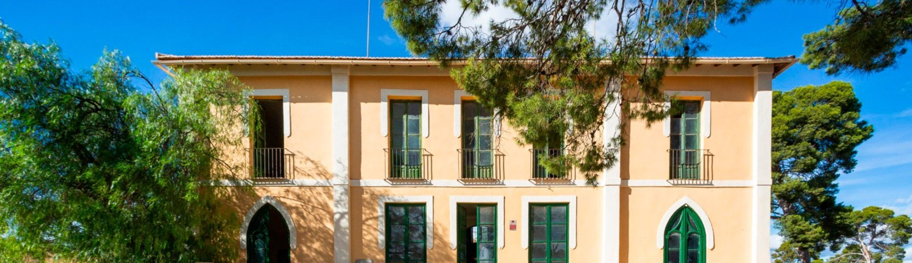
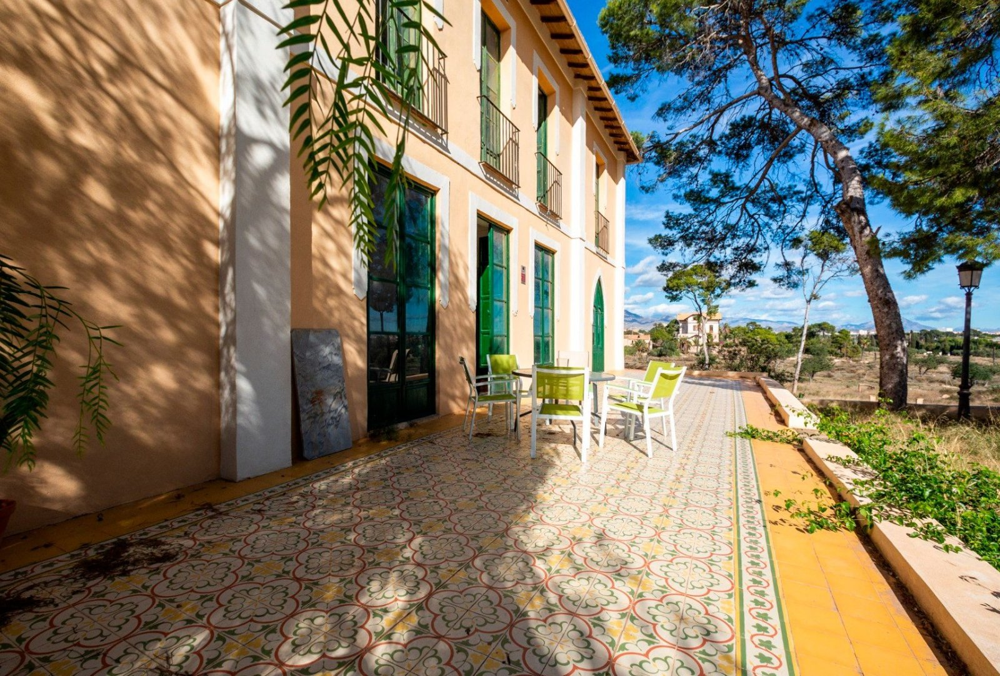
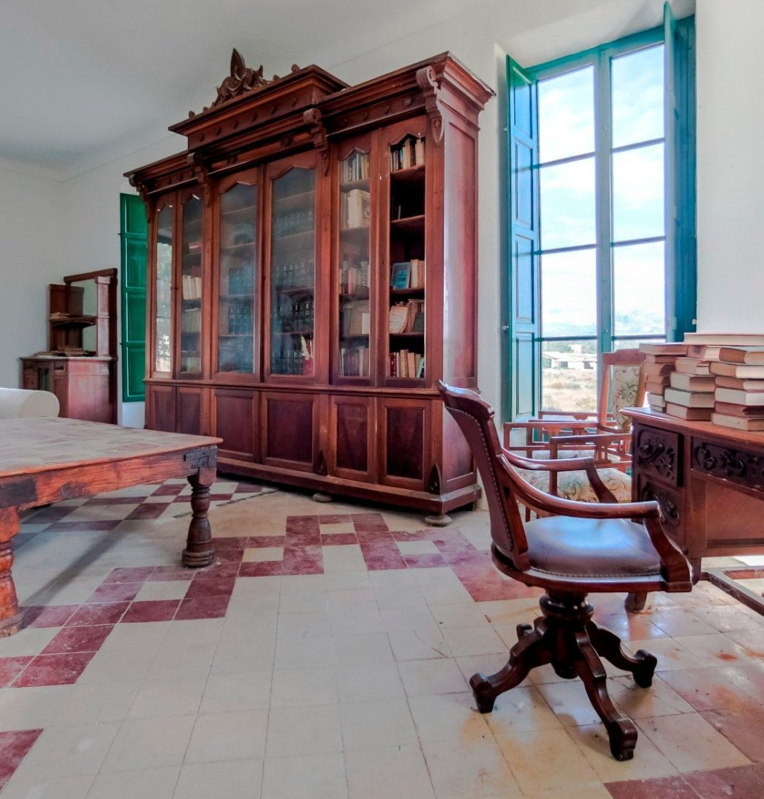
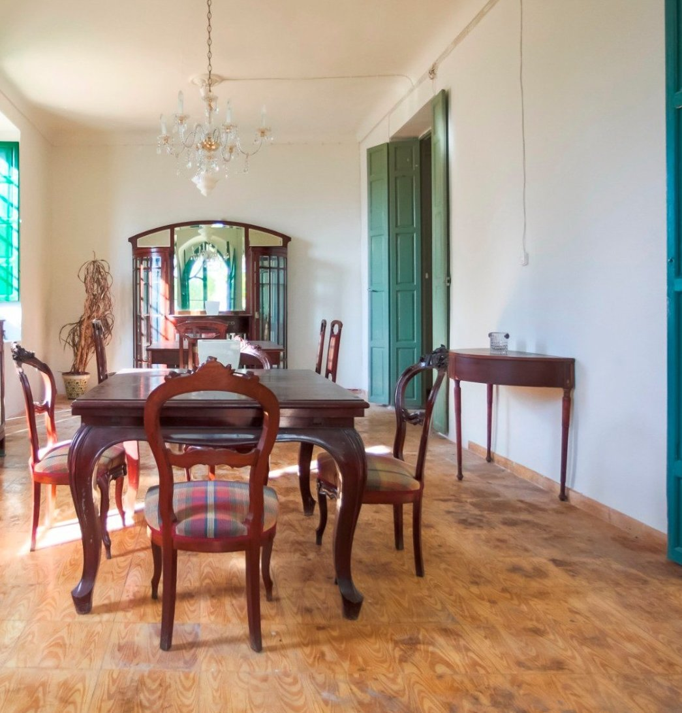
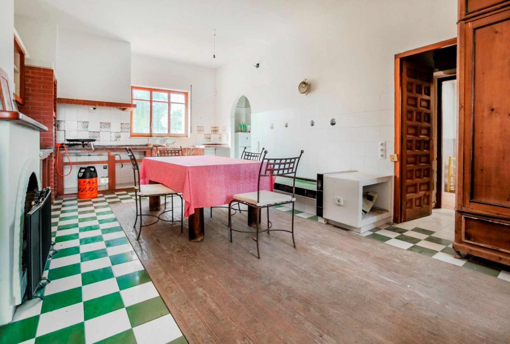
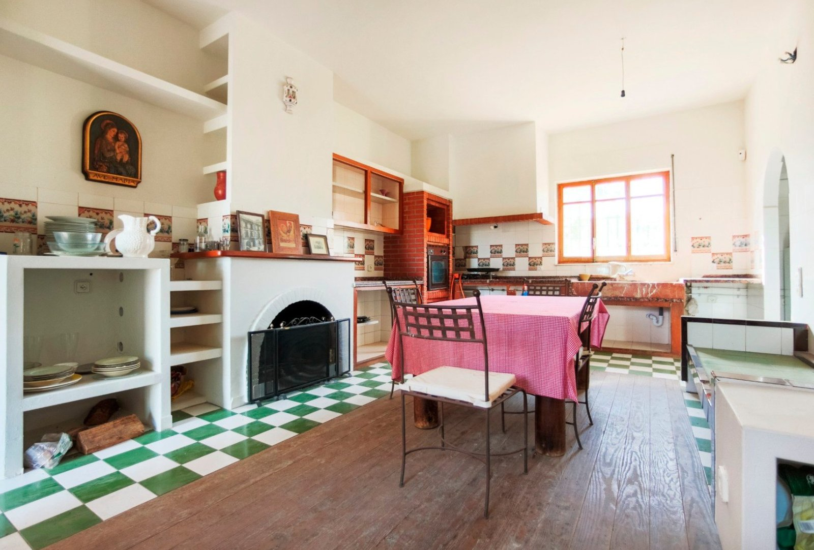
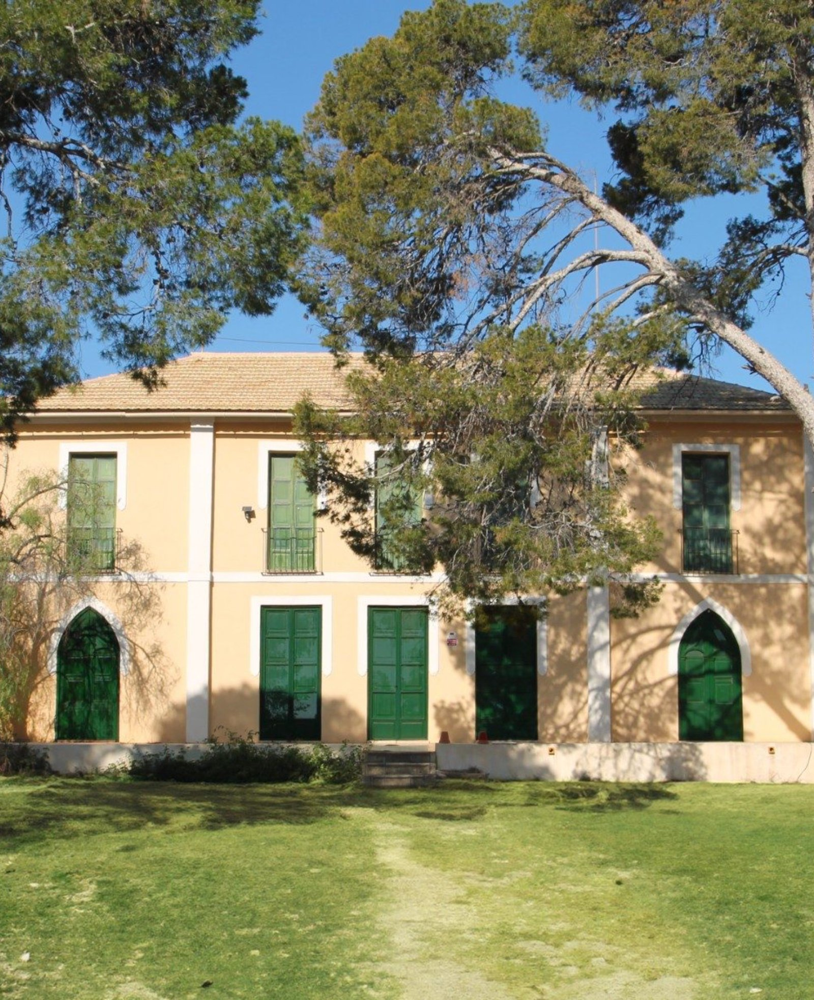

Photos











Historic villa · Santa Faz · Costa Blanca
Mediterranean classic: spacious rooms, high ceilings and a private plot of more than a hectare among pine trees. Santa Faz, San Juan de Alicante.
€995,000 Book a viewing
About the villa
An authentic 1940 villa with classic architecture. The 416.52 m² main house spans two floors: 7 bedrooms, 3 bathrooms, arched living rooms with patterned tiles, a grand staircase, dining room, library and a traditional kitchen with fireplace. Total built area 560 m², south-east facing.
The 10,255 m² plot is surrounded by greenery and pine trees, with room for a garden, fruit trees and lounge areas. A large sunny terrace runs along the whole façade. The plot also has two more buildings: a separate building of about 60 m² and a utility building.
It feels like a country estate, yet city amenities and the Costa Blanca resorts are close by. The house needs complete rewiring and new plumbing.
For a buyer who values historic buildings, privacy and the Mediterranean atmosphere, and wants to update the house while keeping its character.
Heritage status
Permitted
Restore the façade while keeping its historic look; renovate the interiors; rebuild the extra building without enlarging it; landscape the plot and garden.
Not permitted
Enlarging the buildings, adding extensions or putting up new permanent buildings.
Requires approval
A swimming pool must be approved by the town hall given the heritage status.
Photos






Vera Shevchenko · Vera Estates · API member No. 02633